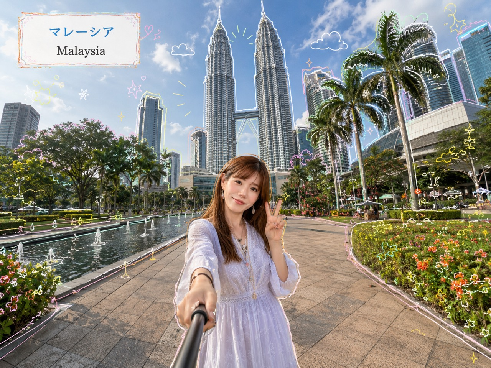
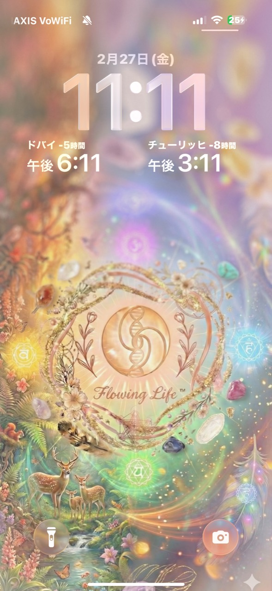
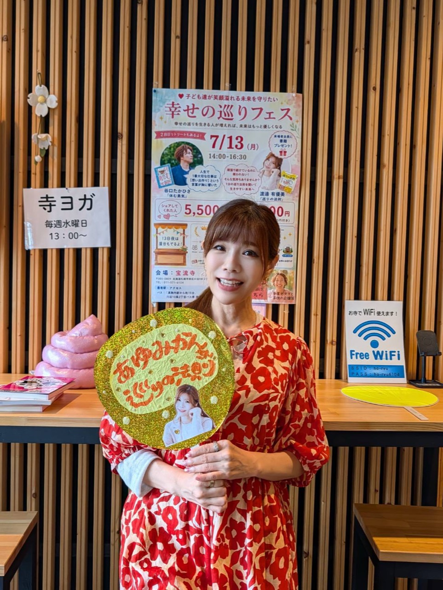

動画一覧
条件に合う動画がありません。
Live Archive
巡り祭 Host
動画を見る前に、まずブラックエンジン診断をしてから見ることをおすすめします。
ブラックエンジン診断は、自分ががんばる時のクセや、豊かさの巡りを止めやすいポイントを知るための入口です。先に診断しておくと、動画の中で出てくる言葉や気づきが自分ごととして受け取りやすくなります。
巡り祭 第2弾の動画を、みんなが見やすいようにまとめています。気になる動画を選んで、YouTubeのライブ動画をゆっくり楽しんでください。



Profile
20年以上にわたりヨガ指導の第一線で活躍し、延べ1万人以上に直接指導。心と体を整えるメソッドとして確立した「1分体操」は、SNSで総再生数2億回を突破し、国内外から支持を集めている。著書『体も心も若返る1分体操』（秀和システム）は、発売前重版・Amazonランキング6冠達成のベストセラー。
2023年、開脚前屈の保持時間において「1時間5分16秒」という前人未到の記録でギネス世界記録を樹立。世界的なヨガ文化の中で、日本人女性として歴史に名を刻んだ。
企業研修・講演活動にも定評があり、ソニーをはじめとする大手企業や自治体、教育機関にて多数登壇。自身の経験をもとに、「健康×習慣化×幸福度向上」をテーマに幅広い世代へメッセージを発信。身体性・感情・脳科学を融合した『純度高く生きる』は、オリジナルメソッドとして、医療・福祉・教育の現場でも高く評価されている。
近年では、SNSブランディングや自己表現法の講師としても活躍し、「運動は運を動かす」を信条に、人が本来の輝きを取り戻すサポートをライフワークとしている。
条件に合う動画がありません。